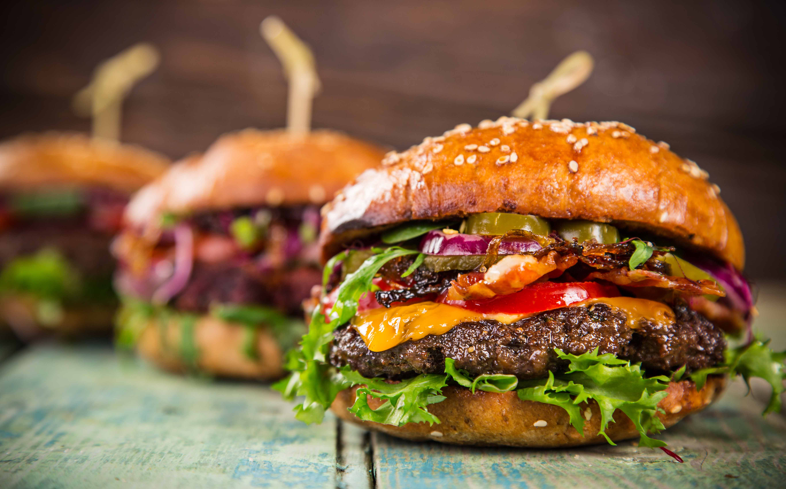

Classic Burger

Burgers - does it get any better?
Nothing beats eating a nice burger on a warm, summer day.
Follow the easy steps below to make your own burgers and get to having fun with your friends and family.
Recipe found here.
Let's get started!
Ingredients
- 1 pound ground beef
- ¼ cup Worcestershire sauce
- ¼ cup Italian bread crumbs
- ½ tablespoon steak sauce (such as A.1.®)
- ½ tablespoon liquid smoke flavoring
- 4 slices sharp Cheddar cheese
- 4 hamburger buns, split
Steps
- Preheat an outdoor grill for medium-high heat and lightly oil the grate.
- Mix ground beef, Worcestershire sauce, bread crumbs, steak sauce, and liquid smoke together in a bowl using your hands. Form mixture into 4 hamburger patties.
- Grill burgers for 5 minutes on the preheated grill. Flip and grill to your desired degree of doneness, about 4 minutes. An instant-read thermometer inserted into the center should read at least 160 degrees F (70 degrees C).
- Remove burgers from grill and cover each with a slice of Cheddar cheese. Allow to rest and serve on hamburger buns.
Return to recipe page.